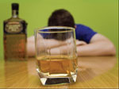

Тем, кто уже устал пить

Эх, где был я вчера, не найду днём с огнём...
Как бы ни было печальным, фраза эта знакома, пожалуй, каждому. Мужчинам и женщинам, молодым
и людям пожившим, употребляющим алкоголь и полностью не приемлющим его.
Алголь доступен и возведён в культ, без него не обходится ни одно событие или "дело", как в
радости, так и в горе. В быту алкоголь давно уже сравнялся со свободно конвертируемой валютой. И
всё бы ничего, если бы действительно не было так мучительно больно и страшно. Ведь ты и сам
знаешь, что если я решил чего, то выпью обязательно... А что, разве есть варианты?
Соскочить со стакана не просто, если ты уже плотно там. И это знает каждый, не раз
дававший себе зарок: Нет, уж сегодня я не буду напиваться, всего одну-две рюмочки. А с завтрашнего дня всё, ни капли.
Или: Отгуляю Новый год и завяжу. Я сказал!
Но вот опять приходит
это завтра или очередной пьяный Новый год и хочется уже либо сдохнуть, либо выползти, потому как
сил так жить больше нет. Да и жизнь ли это? Единственное, что осталось - это желание знать, есть
ли выход и, если он есть, то отдать всё за эту возможность. Возможность выжить. Знакомо?
Хочешь бросить пить?
Попробуй сделать это с нами!
Анонимно. Бесплатно.
Анонимные Алкоголики, возможно, помогут так же и тебе, как многим.
Для этого необходимо всего лишь твоё искреннее желание бросить пить. Иных обязательств в АА
нет.
Приходи на наши собрания, мы будем всегда тебе рады. Ты услышишь
ответы на многие свои вопросы: как мы бросили пить и как изменилась наша жизнь. Как мы пытались
поначалу найти лечение или избавление от нашего алкоголизма,
придя в последствии к пониманию, что нам с этим нужно научиться жить. Жить трезво.
Ведь кто как не "рыбак рыбака" поймёт...
Цель нашего ресурса лишь показать путь избавления от алкоголизма и пьянства, а так же
возможность, что она есть. Не ищите тут каких-то секретов, советов или замудренных рецептов как
бросить пить. Поверьте, мы многое прошли и для себя не нашли ничего более действенного, чем
программа 12 Шагов Анонимных Алкоголиков. Она проста для понимания и выполнения тем, кто принял
решение закончить пьяную жизнь и имел честность признаться в этом, как минимум для начала,
самому себе.
Выход есть! На наших собраниях ты всё узнаешь, приходи. Не стоит
ничего бояться, ведь жить в алкоголизме и пьянстве страшнее, да ты и сам это чувствуешь. Ты
вправе прийти на любое собрание без всяких записей, как и покинуть его по своему желанию, не
объясняя причин.
Так же проводятся собрания специально только для женщин.
Сложно бороться и победить зависимость от алкоголя, особенно в одиночку.
И мы, выбравшие путь АА, живём с ней трезвой жизнью, не тратя сил на борьбу. И, раз у нас
получается, получится и у тебя. Знай, возможно всё! Желание, решение и действия - за тобой.
Если у тебя есть вопросы или пожелания, обращайся через наши
контакты, мы обязательно ответим. Ты можешь позвонить по любому из телефонов, указанных в
наших контактах.
Так же задать вопросы и получить ответы на них, поднять и обсудить тему или пообщаться с
кем-нибудь из не пьющих алкоголиков можно на нашем
форуме. Читать
отдельные темы форума можно без регистрации. Для возможности читать всё и писать в части форума
"Анонимные Алкоголики" необходима регистрация. В свободной части форума: "Пьянство и алкоголизм"
регистрации не требуется.
Если вы обнаружили неточности или ошибки, сообщите нам об этом
через наши контакты
* материалы данного сайта отражают групповые и частные мнения членов групп АА Краснодара
| единый справочник групп АА России | родственникам | карта сайта |
12 Шагов АА
- Новичку
- О программе
- Мифы и правда
- Что на группах
- 7я традиция
- Литература
- Друзья
- Быть трезвым
- Наши истории
- Наш форум
- СИССИТИЯ
- ИСТОК
- НА ТЕМРЮКСКОЙ
- НА ОКТЯБРЬСКОЙ
- РОЖДЕСТВО
- Группы края